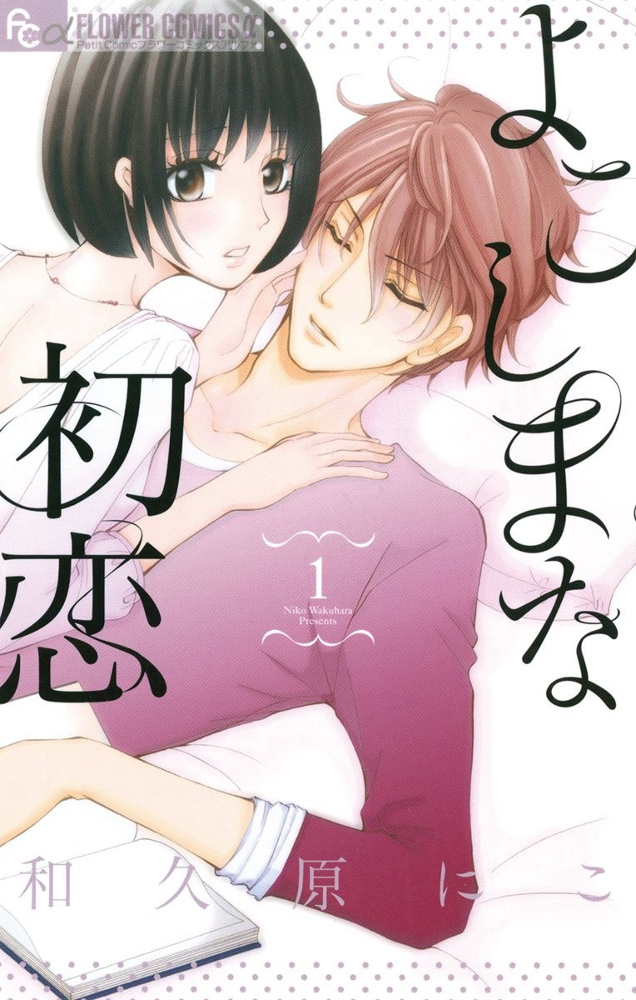
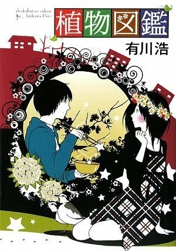
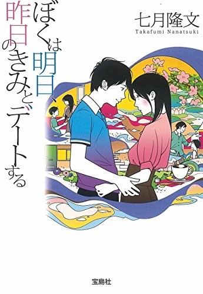
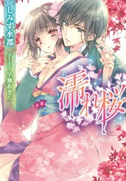
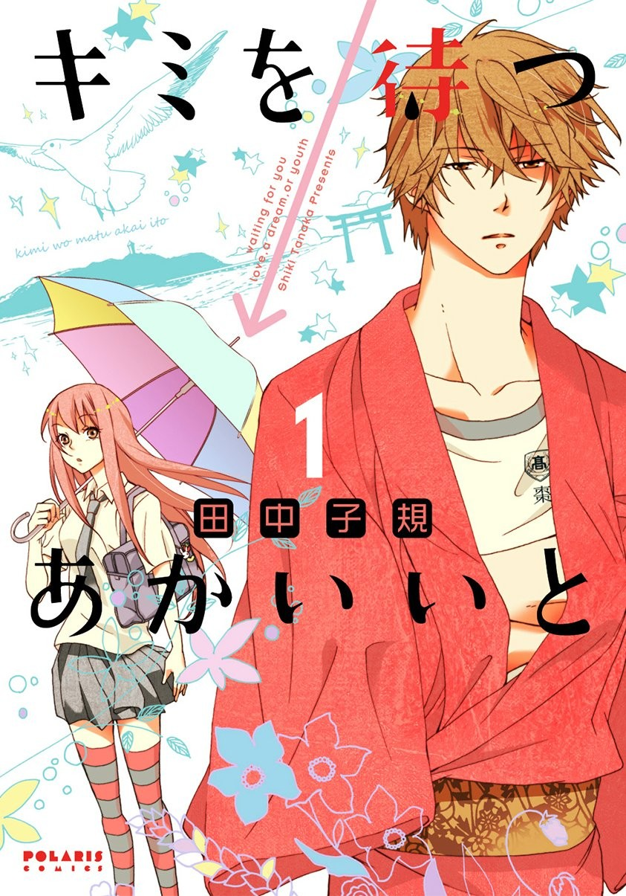
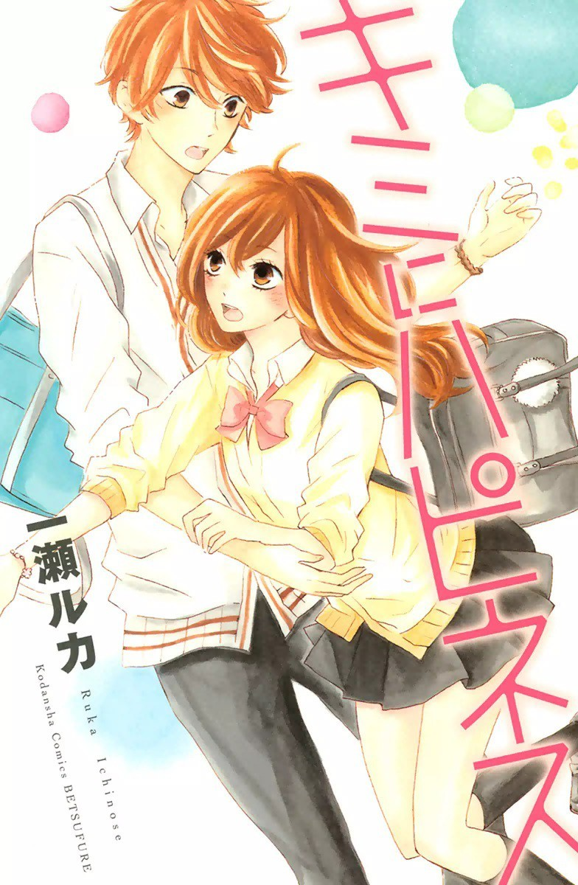
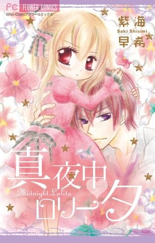

-

よこしまな初恋
不合常理的初恋
我还以为是短篇呢，原来都两卷了，反正我刚看完内段结尾吓死我，说好的叔叔呢完全就是个陌生男人家里啊喂！///原来这个人和女主的叔叔是认识的……//男主这个告白真是打了我个措手不及，对话框乱成一团，故事的话中规中矩了
2018-2-28 -

植物図鑑
植物图鉴
2015-5-3都是晚上回家十点多才看，看得我这个饿。。。／／没想到你是这样的植物图鉴。。。落差感大概比得上十个鬼畜童年向
2016-12-12 -

ぼくは明日、昨日のきみとデートする
明日的我与昨日的你约会
虽然觉得女主的timeleap相关有点不能接受，但整体真是虐我一脸！想着不要看完特意拖着看……还是一天半就看完了……女主视角真的是虐哭我QAQ只能看着恋人与自己慢慢变疏远还要装作没事的样子，和恋人的第一次牵手接吻拥抱全都是最后一次什么的……QAQ看到230+页我还不觉得怎样，结局真的被虐到哭……（顺出这本99新实体回个血ojz
2016-12-8 -

濡れ桜
这本读着真的是特别顺，一不小心就读了10%＋，逻辑通顺我真是太知足了，喜欢，7+预订／男主我看错你了，一点也不甜啊，港真女主当贵族的时候对你不错好吗，要不要这么过分/这类书一旦啪啪起来就停不下来，已经花式啪到了70%，看的我都累……/没想到哥哥是个大助攻，一口气读完了剩下的30%，发现自己有被叫大小姐有快感的癖好（x
2016-11-21 -

太郎くんは歪んでる ~ただ、愛しすぎてしまっただけなんだ~
太郎同学扭曲的爱 ~只是因为太爱妳了~
咦？！新加卷？！//说说134页之后的这个新短篇吧。意味不明。一姑娘装失忆跑到一个中年帅鳏夫家里蹭吃住，男主得癌症俩人半死不活就住在一起了？女主一直要杀男主，因为女主好朋友是男主女儿因为男主酒驾车祸死了，女主要报仇，结果没下去手，和男主相爱了？！男主说我要是死了你别救我女主说好结果最后爱上了还给救了，然后男主抱着女主哭，发现自己做梦？女主原来是女儿的人偶？！难怪前面说女儿的人偶被偷走了
2016-10-11 -

キミを待つ→あかいいと
君想红绳
国内常见的封面是第一话的封面，比这个好看= =少见的be，黑白的男主比有颜色的好看……
2016-6-21 -

キミにハピネス
想要给你幸福
这是我看过的4话内剧情展开最好的一本，感情纠葛比大部分十几话拖沓冗余废话多的要好太多，女配婊子脸出场力度很到位，最后一个番外洗了个半白，男主比起女一女二竟然显得有点刻画不足苍白无力，明明年轻时是个不良你在这说什么可爱的话呢，天了噜难道我喜欢那种婊设定吗，如果换一个角度看女二分明是个可爱坚强又漂亮的真爱
2016-6-21 -

真夜中 ロリータ
深夜洛丽塔
偶然翻出来的，里面画的比封面好看，妹子超萌，男主也就那样。话说好久没建条目一修改忘了好多东西……
2016-6-19